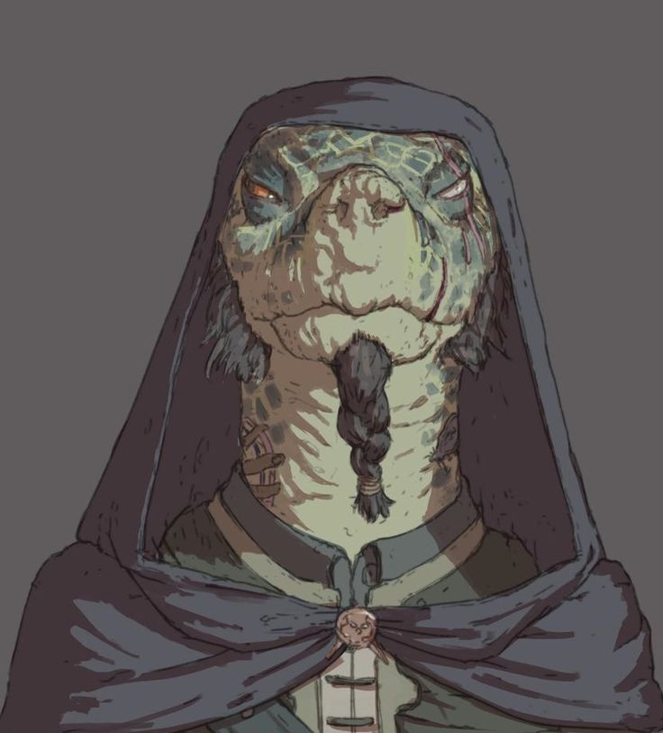

| Gyuro | the Turtle Master · master of the inner way Tortoisekin, a Beastkin lineage Korean stratum as of Gwibong, Tortoise Peak, 715 IC |
| Epithet | the Turtle Master, the name the roads gave him, which went inland faster than he walks; he answers to it the Unanswered Door, among those who have fought his students |
| Concept | He lives so far down inside himself that nothing in the world can reach him, and he will take in anyone who reaches him and asks. |
| Stat line | Stage XIII Principality · Archmaster (Starred) Level 410 · Refined · Jipjuin, the Master of the House Spirit XIII Mastered, V · Body XII Walked 35%, IV · Lenses: home + 4 |
| Combat grammar | Expenditure: the Standing and the Ledger. Everything done to him is dear and everything he does is cheap, and what he has borne comes back in one blow. |
| Aura | color: deepest teal, nearly black at rest; a cyan lattice lights along the joins of his scale plates when he rises, one more pane for each soul he carries; amber at the throat knot and in the right eye texture: still deep water feel: cold and quiet, a settling weight like a well, lamplight going faintly blue; at rest the lattice is a faint line and the room only grows heavy |
| How he moves | He does not move first. Feet wide, shell squared to the blow, head level and drawn back into the collar; a blow lands on one point and goes down through the whole frame into the ground. He steps slowly and sits in place of stepping aside. One hand goes to the neck wrap when he thinks. |
| Stack | sustainable at Anchoring 1,200, Fortitude 1,000, Integrity 900, Constitution 700, Ward 650, Pressure 600 cap two steps on the hidden scale over the sustainable figure layers: AT HOME when called, I WILL BEAR IT and THE ASKING GATE when called, THE NINETY-NINE ROOMS when held |
| Bonded weapon | none; he carries no blade and no staff |
| Kit | a hooded cloak of dusty slate-violet felt, an olive-gray tunic with a tall standing collar and cream frog knots, a cord-and-wrap on the right side of the neck, and the piece people talk about first: the round bronze clasp with a closed spiral in a ring, Rare |
| Voice | ”I have been written down before. The price was at the bottom then also. Leave it on the stone. If the district wishes to ask me, the district knows where the door is.” speaker type: a Seon elder with a stevedore’s patience |
| Next gate | Stage XIV, Zenith Catalyst: a Hollow Throne recognizes a life’s meaning; nothing is attempted and no purse buys it holds at Level 420, ten Levels off |
I. Identity
| Field | Value |
|---|---|
| Full Name | Gyuro (규로, 閨路), no surname |
| Pronunciation | GYOO-roh |
| Alias / Title | the Turtle Master · master of the inner way · Juin · the Unanswered Door · Archmaster of the Porters’ Hall |
Also Known As
| Name | Who says it |
|---|---|
| Juin (주인) | his students, “the one the house belongs to”; they never say Turtle Master inside the walls |
| the Standing Exception | the Accord’s clerks, a filing term for a beastkin Archmaster the Labor Provision will not fit |
| the Hider | rival schools, who call the inner way a hundred ways of not being struck |
| Fen | the beastkin pens, whispered: “what cannot be taken” |
| the Door that never opens | the Brokencollar |
| the Papered Beast | slavers and license-holders, quietly, and never within a day’s ride of Gwibong |
| Field | Value |
|---|---|
| Race / Lineage | Tortoisekin, one of the smaller Beastkin lineages; Body then Spirit, the Carried House shapes: heavy Fortitude and Constitution from waking, Anchoring and Integrity come easily, Longevity and Maturity come easily, Celerity and Evasion stay low at every Stage, Regeneration is slow, cold slows him gives: a domed shell for a second skin and a house, a neck that draws back into the collar, about five centuries of life; no eye, no grip, no bloodline instrument |
| Age | 446, hatched in 269 IC |
| Realm / Faction | the Guild Accord, free-status by guild membership seat at Gwibong, Tortoise Peak, in Korean-stratum country; no polity, and no house has claimed him |
| School and sect rank | founder and master of Naedomun, the Inner Way School (the Turtle School to outsiders); its hall is the Anchae, the Inner House, with no outer hall, and visitors are received in the yard Accord title: Archmaster, Porters’ Hall, in the trade he was sold as |
Renown
| Among | What they say of him |
|---|---|
| the public | The Turtle Master: very old, very slow, a story of a river that stood still. Those who have met him say he asked their name and waited. |
| the sects | The Hider. His students are respected and avoided in brackets. |
| the guilds | The Standing Exception, renewed each year by clerks who would rather not sign it. Polite, careful, and since 714, interested. |
| the beastkin | Split. The pens whisper Fen and believe he never held papers; he did. The Brokencollar call him the Door that never opens. Tortoisekin elders are divided between a saint and a traitor, because in 698 he refused the Accord’s recognition of their whole lineage. |
| rival Archmasters | The one who cannot be hurried. They know what nine days looked like and none will schedule a second. |
| slavers and license-holders | The Papered Beast. |
| Field | Value |
|---|---|
| Catalyst Event | The Gate, March 301 IC: seventy-one hours holding the flood-door of the Greaves pit with nothing on his surface for a failing Wellspring to take |
| Refusal | ”I will not carry anyone who has not asked to be carried.” Offered a lineage’s freedom, an army, the Accord’s seat or his sister’s rescue by force, he has said it unchanged. |
| Conviction | A house is opened from inside. Rescue done to a person is the same hand as sale, and whoever is carried unasked has only changed owners. It costs him the dead who knocked late and the ones who never knocked. |
| Arc kind | Positive, and late. What stands unfinished in him is the one thing he has refused for four hundred years: a knock of his own. |
II. Soul Architecture
| Field | Value | Note |
|---|---|---|
| Level | 410 | holds Principality from 401, and Zenith from 420 |
| Temperance Stage | XIII, Principality · Archmaster | no Residual Strain; none builds at XIII short of 500 |
| Path | Spirit XIII Mastered · Body XII Walked 35% | Spirit leads: the Core, the self kept like a house. Body is the shell, a Stage behind on its gates. Fate is never walked, so Projection and Persistence stand at their gates. |
| Guild title | Archmaster, Porters’ Hall, Guild Accord | the trade is Porterage; a century and a half by commission |
| Mastery | Spirit V, Ferryman: the lead, read from Level 410 under Principality’s ceiling · Body IV, Luminous: Walked, one rung under the V his Level gives · Fate: none | a Path never walked reads nothing |
| η | 1.00 through the Core, about 1.2 on his own ground (deep standing water, drowning places) · 0.97 through the Shell, past 1.0 on stone under load and heights, and Gwibong is his Body ground | |
| Soul Crystal | Starred, the Archmaster’s look | |
| Crystal State | Refined | nothing bought, nothing Overgrown; three spells of Residual Strain, all closed |
| Class | 집주인 Jipjuin, the Master of the House gives: ALL WHO KNOCKED; shapes: Tempering Coherence and Dominion Pressure evolved from 대들보 Daedeulbo, the Great Beam (about 622), 집지기 Jipjigi, the Housekeeper (about 568), 문지기 Munjigi, the Doorkeeper (about 515), and 짐꾼 Jimkkun, the Porter (468) | the soul offered him the word his students already used |
III. Wellspring Harmonizations
| Wellspring | Folk name | Kind | Depth | Got from | What it bends in him | Note |
|---|---|---|---|---|---|---|
| Thaloré (home) | the Heavy Heart | Spirit | deep | first touched at the Gate, 301 | feeling given its true weight; a grief borne deep presses on every soul in the room | Sylorin; dissolution; near-black teal |
| Petralon | the Foundation Stone | Wild | working | the porters’ road, Expert, 441 | every blow handed down through the skeleton into the ground | Kaldrion; coagulation; heavy gray; the shell |
| Fixatio | the Knot | Medium | working | Master, 548 | what is bound stays bound | Atla’zon; coagulation; amber resin; the throat knot, the crooked plate, the rule |
| Orrenthal | the Common Heart | Wild | shallow | Grandmaster, 640 | a load struck on one point borne by the whole frame; very hard to inscribe on or talk round | Kaldrion; conjunction; polished blue-silver; the Anchae held in common |
| Pyraeon | the Ember | Wild | shallow, waking | Archmaster, 702 | the flare given up and the heat kept | Chronaeus; distillation; dull red glow under a crust; patience as a fire |
IV. Primary Stats
| Primary | Total | Mean |
|---|---|---|
| Vitality | 3,300 | 412.5 |
| Ardency | 1,040 | 130 |
| Gnosis | 1,500 | 187.5 |
| Dexterity | 700 | 87.5 |
| Harmonics | 1,200 | 150 |
| Resilience | 3,900 | 487.5 |
| Tempering | 2,700 | 337.5 |
| Dominion (seven, Throne apart) | 1,600 | 228.6 |
| Throne | not opened | · |
| Field | Value |
|---|---|
| Pool | 15,940 |
| Spent | 15,940 |
| Unspent | 0 |
V. Sub-Stats
| Primary | ||||||||
|---|---|---|---|---|---|---|---|---|
| Vitality | Fortitude 1,000 | Absorption 600 | Constitution 700 | Hemostasis 200 | Regeneration 100 | Filtration 150 | Tolerance 300 | Threshold 250 |
| Ardency | Flux 120 | Alacrity 40 | Depth 200 | Penetration 300 | Compression 250 | Cascade 30 | Overchannel 60 | Density 40 |
| Gnosis | Perception 400 | Acuity 120 | Forecast 80 | Fluency 60 | Retention 350 | Analysis 200 | Cognition 90 | Vigilance 200 |
| Dexterity | Celerity 60 | Reflex 150 | Finesse 90 | Economy 200 | Evasion 20 | Grapple 120 | Feint 10 | Sequence 50 |
| Harmonics | Attunement 300 | Projection 175 | Breadth 100 | Stability 350 | Empathy 150 | Synergy 75 | Axis 40 | Suppression 10 |
| Resilience | Integrity 900 | Ward 650 | Persistence 550 | Anchoring 1,200 | Fortification 200 | Hardening 150 | Oath 200 | Continuity 50 |
| Tempering | Clarity 400 | Overflow 150 | Maturity 550 | Coherence 500 | Yield 300 | Ceiling 150 | Capacity 250 | Longevity 400 |
| Dominion | Radius 150 | Sovereignty 175 | Sense 300 | Gravity 175 | Pressure 600 | Command 200 | Fate 0 |
Field
Note
Value
Anchoring at the roof with Fortitude, Integrity and Ward behind it: a house. Pressure 600 with Projection held at 175, so his weight fills a room and does not leave it. Celerity 60 and Evasion 20: he has never once got out of the way. Fate 0: whatever holds in him holds because he holds it.
VI. Force of Hand
| Measure | Feats | Carried by | Note |
|---|---|---|---|
| Strike Force | 46,024 to 4.18 million EU delivered, City Block to Multi-City Block | Penetration 300 | his hand is the weakest thing about him, and he knows it |
| Lifting | 100 to 500 billion metric tons; a river eleven fathoms deep held a day and a night | Fortitude 1,000 and Constitution 700 | past a point he bears and the ground carries it |
| Travel speed | 60 to 150 m/s in a burst, never seen at it | Celerity 60 | he walks |
| Reaction | 5 to 15 ms | Reflex 150 | everything he has wants the blow to arrive |
| Durability | continental to lunar-scale events; nine days under an Archmaster’s blows | Fortitude 1,000 | four centuries of rows say this is the number |
| Aura | felt plainly to about 30 m, contact 3 to 5 m, projected force 100 to 200 m | Pressure 600, Projection 175 | heavy, near, and it stops at the wall |
| Authority radius | anchor 3 m, authority 30 m, addressing 300 m | Radius 150 | a house and its yard, never a province |
VII. Aether Flow
| Measure | Figure | Note |
|---|---|---|
| EU Reserve | 471,107,480 EU | 4.71 × 10⁸ |
| Held as | Essence 65% · Charge 35% | Essence 306,219,862; Charge 164,887,618; the two never trade |
| Flux Density | 2.5 × 10⁶ EU/g | low for an Archmaster; he is built for the long hold |
| AU/s | 2,500,000 | |
| From full | 188.4 s at full output; Starvation at 169.6 s | through the Shell 3% burns as heat |
| Recovery | about a tenth a minute at rest: empty to full in ten minutes, out of Starvation in one | two to three times that sitting, which he does best; faster on deep water and Gwibong’s stone, slower on arid ground |
| Bearing drain | 500 to 1,000 EU/s | the house held and nothing pushed: five to eleven days from full |
Spending tells
| Reserve left | What shows |
|---|---|
| bearing, any amount | nothing but stillness; the room settles cold and the lattice holds at a faint line |
| half | the slow breath slows further and deepens, drawn by the limbs; the lattice dims toward near-black teal; the head sits a finger lower in the collar; a faint haze off the plates under the cloak |
| a quarter | a tremor in the hands; the lattice thins to a few lines over the brow; colors near him go flat; the crooked plate runs warm; fewer words, and he never said many |
| a tenth | the lattice flickers and a Trait stutters; a slipped word, then a slipped name; steam at the shell’s edge; the crooked plate opens first, in fine bright lines along its old break |
| past that | blood at the corner of the beak and the nostrils; the plates cracking in fine lines along the lattice; the head fully drawn in; the names of the dead he keeps sitting wrong in his own mouth |
VIII. Traits
Full accounts: Gyuro — Abilities
Every Trait reads at his lead Mastery, Spirit V.
| Trait | Kind | Source | Path and Form | Gates | What it does | Limit | Tell | Cost | Counter | Numbers |
|---|---|---|---|---|---|---|---|---|---|---|
| EMPTY YARD · 빈 마당 Bin madang, “the empty yard” | Primary | Lived | Spirit, through Thaloré and Orrenthal | none | Keeps nothing on the surface to read, grip or talk round; a starving Wellspring finds nothing to take. | No armor: a spear does not care what lies on the surface. Nothing he feels ever comes up; no one has comforted him in four hundred years. | the room grows heavy and quiet around a man who shows nothing; the light goes faintly blue | nothing; it is part of the held house | a reader a full step over his Ward on the hidden scale | Ward 650, Integrity 900 |
| THE CARRIED HOUSE · 진 집 Jin jip, “the house borne on the back” | Inherited | Inherited | none | none | A domed, plated shell, a second skin and a house; a neck that draws back into the collar. | Slow, heavy, poor at climbing, slow to heal; the crooked plate is the one seam. | scutes worn pale; a slow heart | nothing | lift him; strike the crooked plate | five centuries of life |
| HEARD · 들었소 Deureosso, “heard” | Passive | Lived | Spirit, through Thaloré · Read | Principality | Every real asking made near him reaches him, with who asks and from where; so does who did not ask. | He hears far and reaches near, and it never switches off. A terrified city can drown it. | a stillness in him as an asking arrives | the toll is sleep | flood it | within a day’s walk |
IX. Skills and Abilities
Full accounts: Gyuro — Abilities
Skills
| Skill | Cues / mechanics | Learned where | Priced by (Sub-Stats) | Mark | Rank |
|---|---|---|---|---|---|
| Porterage | loads across Gates, passes and halls | the Porters’ Hall, a century and a half by commission | Fortitude, Constitution | Mastered | Paragon |
| Load-reading | where the weight sits on a body, a beam, a person | Jimkkun’s gift | Perception, Retention | Mastered | Grandmaster |
| Bearing | taking a blow and sending it down | the Greaves stair, the Hall, the Kneeling Hill | Anchoring, Fortitude | Mastered | Archmaster |
| Stillness | the withdrawn seat and the long hold | the flood-door | Constitution, Coherence | Mastered | Archmaster |
| Unarmed | the one strike, rarely | the Hall’s road | Penetration, Economy | Mastered | Grandmaster |
| Holding | grips, pins, the shell turned to a wall | the Hall’s road | Grapple, Fortitude | Drilled | Master |
| Teaching | the Anchae | Gwibong | Clarity, Maturity | Drilled | Master |
| Courtesy | a servant’s courtesy kept after the servitude | the pens | Maturity | Drilled | Master |
| Accord law (the Labor Provision) | where the Provision has holes | Edda Orme’s reading | Retention, Analysis | Drilled | Expert |
| Knotwork and cordage | the neck wrap, the beard tie, the frogs | the pens | Economy | Drilled | Expert |
| Letters and registers | enough to find one stock number in a roll | the Hall | Perception | Held | Adept |
Techniques
| Technique | Kind | Mark | Source | Path and Form | Gates | What it does | Limit | Tell | Cost | Counter | Numbers |
|---|---|---|---|---|---|---|---|---|---|---|---|
| NAEDO · 내도 內道, “the way inside”, counted in Rooms (Kan) | Signature Art | Mastered | Lived | Spirit · Thaloré · Rite | none | The power to live so deep inside himself that nothing can reach him, and to carry anyone who reaches him and asks into Rooms where nothing can reach them either. | Opens only to an asking, and only at his reach. It cannot imprison; a guest leaves when the guest wishes. | the head draws in and the lattice dims pane by pane | held drain, 500 to 1,000 EU/s | an enemy who stays out of reach, or who asks truly and opens a door from inside | ninety-nine Rooms |
| BEARING · 지다 Jida, “to bear on the back” | Signature Technique (Jimkkun) | Mastered | Lived | Body · Orrenthal, Petralon · Shape | none | A blow on one point is taken by the whole frame and handed down into the ground. | Answers pressing and striking, never a pull or a lift. Each great load sets his stance a little lower for good. | dust sagging toward the ground; stone and hot metal; a faint metal glint on the skin | the held drain; 3% of each spend burns as heat | a grapple that lifts; Fractura along the seams; an iron-caged room | Body IV, η 0.97 |
| GOING IN · 들어가오 Deureogao, “I go in” | Signature Technique (Munjigi) | Mastered | Lived | Spirit · Thaloré, Fixatio · Rite | none | He goes down Room by Room, shutting each door behind him, until nothing hunting him can follow. | The deeper he goes the less of him is in the yard; his speech drops to single words and the body sets. A door shut in error stays shut. | the head draws into the collar, the amber eye half closes, a few breaths a minute | about 500 EU/s, house empty | waiting him out, or harming what he loves in the yard | the outer Rooms stop Pressure and reads; deeper ones, soul-wounds; the ninety-ninth, anything |
| COME IN · 들어오시오 Deureoosio, “come in” | Signature Technique (Jipjigi) | Mastered | Lived | Spirit · Thaloré, Pyraeon · Rite | none | One who reaches him and asks is taken into a Room; the body stays slack in the yard while the soul sits somewhere warm and unreachable. | By touch only. Only an asker. The bodies stay in the yard and can be killed. Every guest is bound to him for life and knows the way back in. | ”Come in,” a body going slack under his hand, peat smoke, one more pane lit | about 5 EU/s per guest; a dying guest about ten times that | kill the bodies; keep askers from reaching him; a guest who opens a door | ninety-eight guests |
| THE GREAT BEAM · 대들보 Daedeulbo, “the great beam” | Signature Technique (Daedeulbo) | Mastered | Lived | Body · Petralon, with Thaloré · Shape | none | A held load, a river or a wall or a roof, goes down through him into the ground for days and nothing is pushed back. | Needs ground under him; on a deck, silt, sand or over a drop it has nowhere to go. A lift looses the whole load at once. | a deep slow settle in the stone under him, nothing moving at all | about 590 EU/s for a river | Cymorath; Abython; bad ground; lifting him | the Bearer’s Bend ran on it for a day and a night |
| ALL WHO KNOCKED · 두드린 이 모두 Dudeurin i modu, “all who knocked” | Signature Technique (Jipjuin) | Mastered | Lived | Spirit · Thaloré, Orrenthal · Rite | none | Everyone inside his field who has asked goes down into a Room in the same breath. | Only inside 30 m, only askers; the house fills at ninety-eight. | the whole lattice lit at once and a yard of bodies going slack together | what COME IN costs, per guest | strike the bodies, all of them in one place | 30 m |
| SETTING DOWN · 내려놓소 Naeryeonoso, “I set it down” | Signature Technique | Mastered | Lived | Body · Petralon, Pyraeon · Strike | none | Everything he has borne goes into one blow at one place, once. | Returns only what was laid on him; a fighter who never strikes him gives it nothing. One grief he carried goes into the ground with it and he can never feel it at its weight again. | the lattice goes from dim to blazing down the whole shell in one instant; thin smoke from every seam; glowing cracks along the plates | about a third of his reserve | give it nothing; break off before the load is full; lift him off his ground; Catharsis | 3.7 × 10⁷ EU delivered at the Kneeling Hill, on Petralon alone; Pyraeon banks it since 702 |
| MAY I COME IN · 들어가도 되겠소 Deureogado doegesso, “may I come in?” | Signature Technique | Never made | Lived | Spirit · Thaloré · Rite | none | The last movement of the inner way: he asks to be carried into another’s house. What it does is not known. | It needs another soul to answer. | none seen | unknown | the other soul refuses, or never answers |
Releases
| Release | Kind | Mark | Source | Path and Form | Gates | What it does | Limit | Tell | Cost | Counter | Numbers |
|---|---|---|---|---|---|---|---|---|---|---|---|
| AT HOME · 집에 있소 Jibe isso, “I am at home” | First Release | Mastered | Lived | Spirit · Thaloré · Rite | Spirit IV | ”Jibe isso.” The lattice lights over the whole shell and GOING IN stops taking him out of the yard. A soul he lays a palm on is shown the door: its Pressure, coat and held workings are knocked back inside it for a breath. | Contact only; the door holds a breath. While it stands the yard is not empty and he cannot lie. | two quiet words, then the lattice lit from crown to tail | about 250,000 EU/s; 31.4 min from full | stay out of his hands; hit the body; ask him questions | each palm strike is a committed exchange of 1 to 3% |
| I WILL BEAR IT · 지겠소 Jigesso, “I will carry it” | Second Release | Mastered | Lived | Spirit · Orrenthal, Thaloré, Fixatio · Rite | Spirit VII | ”Jigesso.” Inside 30 m, whatever is laid on anyone who has asked him is taken as laid on the whole house; a blow at a guest lands on his shell. It opens and powers the Domain. | Only askers, only inside 30 m. What he bears for another stays bound to him: the guest walks out without it. | nothing changes in the room; the guest does not flinch | about 600,000 EU/s with the Domain; 13.1 min from full | strike the unasking, or from past 30 m; harm already done | with AT HOME up too, 850,000 EU/s; 9.2 min |
| THE ASKING GATE · 청문 請門 Cheongmun, “the gate of asking” | Domain | Mastered | Lived | Spirit · Thaloré, Fixatio · Claim | Spirit VII | His house and yard obey one law: no one is carried who has not asked. Collars bound by a working go slack and a dragging hand finds the body will not leave its place. | The law binds him first and he cannot alter it: the sleeping, the senseless and infants cannot be moved by anyone. It covers no killing. | a chain someone was hauling goes slack in their hands; the air thickens toward blue | about 600,000 EU/s called; the held drain when laid | a field two Stages up; anything beyond 30 m | authority 30 m; true Domain from 548; registered at Principality, 702 |
| THE NINETY-NINE ROOMS · 아흔아홉 칸 Aheunahop kan, “ninety-nine bays” | Realm | Mastered | Lived | Spirit · Thaloré · Claim | Realization | He takes other people’s Domains in as Rooms of his house, still running, with their owners in them; the law of each is read as a guest’s law. | Only fields inside his 30 m. It needs a meaning he truly understands: a field whose law is rescue by force is the one he cannot hold whole. For a day and a night after it is let go his power spills and sits ill on him. | none seen; the held field’s own tell | the held drain; it owes no knot | silence, the unrecorded, a soul that will not be read; Mugan | opened in 684 |
XI. Resistances
| Against | Resistance | Carried by | Note |
|---|---|---|---|
| Crushing, blunt load, repeated blows while grounded | near-immune | Anchoring 1,200, Fortitude 1,000, Petralon | the thing he is |
| Mind-work, inscription, being talked round | excellent | Ward 650, Integrity 900, Orrenthal | |
| Reads of his figures | good | Ward 650 | a reader needs Perception a step over it |
| A pull, an uprooting, being lifted or drawn out | poor | Petralon’s flaw | his one true seam |
| Fate pulls on what he depends on | fair | Persistence 550, Continuity 50 | a sound thing stands; the crooked plate is his wearing strap |
| Pressure matched away (Abython) | poor | the contrary of his home lens and his shell | the counter to send against him |
| Speed and range | poor | Celerity 60, Evasion 20, Radius 150 | anything that will not come to him can wait him out |
| Cold and dry ground | poor | Tolerance 300 | Thaloré hates arid ground; a dry iron cell in winter is the worst room for him |
| Poisons | fair | Filtration 150 |
XII. Physical Description
| Feature | Description |
|---|---|
| Build | Squat, wide and deep-chested, about five and a half feet and near three hundred pounds. A high shell dome rides behind the shoulders under the cloak, scutes worn pale. The neck is long, thick and corded, with deep folds along the throat. |
| Hair | Dark gray tufts at the jaw, never cut. A narrow goatee at the point of the chin, gray-black and oiled, in a tight three-strand braid a hand long, tied off with a pale tan cord from the last collar he wore. |
| Skin and scales | Pale sage-green, near cream on the throat and chin, darker olive on the cheeks. Blue-gray scale plates on the crown and ringing the eyes, with a hexagon pattern worn pale; a thin cyan lattice shows along their joins. |
| Face and eyes | Blunt, broad head with a heavy brow, flat top and a short downturned beak, two small nostril slits, no teeth, and a thick upper lip pouched over the lower. The right eye is bright orange-amber with a black pupil. The left is milky and blind. The look is level and a little down, and goes through whoever is in front of him. |
| Marks and scars | A raised dark-red scar from the brow down through the left lid and cheek to the beak’s side, Hask’s, from the sixth day on the Kneeling Hill. A chip on the nose bridge. Fine pale cracks across the muzzle and cheeks from age and weather. A rust-brown cord-and-wrap bound around the right side of the neck over the old stock-licensing mark; he keeps it where he can feel it. |
| Hood and cloak | Dusty slate-violet felted wool, hood pulled forward into a steep arch, a short shoulder cape in broad ragged-edged folds. Worn, stiff, never torn. A blind-stitched knot-glyph inside the hem. |
| Tunic | Olive-gray hemp twill, a tall stiff standing collar edged in darker brown-gray, cut straight and closed down the center with cream frog knots in undyed cord, hand-tied and replaced when they fray. |
| Clasp | Round, bronze, the size of a large coin, at the middle of the chest; a dark ring with a closed spiral inside it, a line that goes in and does not come out. |
| Hands | Broad and blunt, scarred across the knuckles by cord and rope. |
Wounds carried
| Where | The wound | What it stops him doing | Treated by |
|---|---|---|---|
| Left eye | blind, from the Kneeling Hill | nothing he sees on that side, and he reads loads by the weight in the room more than by his eye | untreated; Tortoisekin set where they lie |
| A plate of the shell | cracked in 301, healed crooked | it is the one seam in the house; Fractura finds it first, and SETTING DOWN cracks it again | untreated |
XIII. Psychology
| Field | Value |
|---|---|
| Core Wound | In 311 he carried his clutch-sister Ohra over the Greaves pen wall in the dark without asking. Eleven days later she walked back through the gate on her own feet and he did not stop her, and understood what he had done. |
| Flaw | He honors an asking above judgment. A clean ask from an unclean hand reaches him as a real one. |
| Desire | To be carried once, because he asked. He has never asked anyone for anything since the pens. |
| Strength | Patience that outlasts people, armies and arguments, and a body and a self that bear any load without breaking. |
| Loop | He waits to be asked. He is asked. He answers in full. Each answered asking makes the unanswered ones weigh more, and he sits down to wait again. |
| Foil | Isk, his pupil, who would kick every pen door down and may be right; and Corvane Hask, who kicked them for money. |
| Stress Default | The head draws down into the collar, speech drops to single words and courtesy rises. The room leans toward him and he gives it nothing. |
Voice block
| Field | Value |
|---|---|
| Speaker type | A Seon elder with a stevedore’s patience: every word the same weight, long silences, a servant’s courtesy kept after the servitude |
| Chant tongue | Naedo’s calls in Korean-stratum words (Kan, Anchae, Juin); his releases are called as he would call them, in plain old polite speech |
| Lying tell | He answers too fast, in the same words each time: “I do not know.” The blind left eye narrows as the head draws down. |
| Notices first | Loads and thresholds: what a person carries, where the weight sits on a body, which side of a door they stand on, whether they have knocked |
| Speech length | A line, sometimes three. A long answer only to a real question, and he stops when the asker’s eyes go. Broken by his hand going to the neck wrap, a pause, or the listener. |
| Wit | Dry, slow and cruel by omission. Never at the expense of the pens. |
| Accent features | Even stress on every word, plain-speech register, no hurry before a name |
| House words and sayings | ”The shell is the house. The master is inside.” (the school’s, said at the door) “Knock as long as you like. A wall does not answer.” (his, rationed) “A load is not a debt." "Ask once, plainly. I am slow, not deaf." "The yard is for the buyer.” |
| Sentence length | Short |
| Contractions | Never |
| Pet phrase | ”Heard.” (an asking received) |
| Never says | ”Come with me,” “follow me” or any order that takes a person. He may say carry of a load, or of his refusal. |
| Stumbles | No |
| Gloss rights | Diagnostic only, to a student who has asked |
| Stress shift | Quieter and more courteous, single words |
| Grief shift | Goes still, hand to the neck wrap, says the dead’s name once |
| Joy shift | Answers “Yes” before the question is finished: the fastest he ever speaks |
| How modern | Not at all |
| Sample line | ”I have been written down before. The price was at the bottom then also. Leave it on the stone. If the district wishes to ask me, the district knows where the door is.” |
XIV. Equipment
| Item | What it is | Rarity | Rung | Bonded | Multipliers |
|---|---|---|---|---|---|
| Hood and cloak | felted wool, worn for decades | Uncommon | Plain | no | none |
| Tunic | olive-gray hemp twill, standing collar, frog knots | Common | Plain | no | none |
| Naedomun clasp | round bronze clasp, a closed spiral in a ring | Rare | Plain | no | none |
| Neck cord and wrap | rust-brown cord bound over the old licensing mark | Common | Plain | no | none |
| Item | Look | Maker’s mark | Wear and repairs | How it is shown off | What people say |
|---|---|---|---|---|---|
| Hood and cloak | dusty slate-violet felt, steep hood, ragged-edged cape, cut full for a shell | a blind-stitched knot-glyph inside the hem | stiff and creased, never torn | it is not | that he has worn the same cloak since before the school |
| Tunic | olive-gray twill, tall standing collar edged in brown-gray, cream frog knots | none | worn soft at the folds; no two knots match | it is not | |
| Naedomun clasp | dull bronze, dark ring, a coiled line that goes in and does not come out | a small stamp on the pin bar from a school smith | the most worked thing he wears; pale where thumbs find it | by being kept plain, at the point where the cloak closes | that the spiral is the school’s whole doctrine, and that he wears it where the cloak closes |
| Neck cord and wrap | rust-brown cord, looped and knotted, with a small hook at the tail, bound over the right side of the neck | his own knotting | faded, replaced when it frays | he does not hide it | the pens say it is a vow; the clerks know it is a number |
XV. Temperance Record
Level log
| Levels | Where they were earned |
|---|---|
| 1 to 16 | the pens, the Greaves stair and the Gate |
| 17 to 102 | the Porters’ Hall: a century and a half of loads across Gates and passes that no one else would sign for |
| 103 to 204 | the road as a Hall porter, and the founding of the Anchae |
| 205 to 303 | the long middle: askings answered at a door, one a generation |
| 304 to 345 | the Withering years, and the Bearer’s Bend |
| 346 to 381 | the years after the Bend, and the Nine Days on the Kneeling Hill |
| 382 to 402 | the eleven years’ seclusion beneath the Anchae |
| 403 to 410 | thirteen years of Gwibong’s yard |
Stage ledger
| Stage | Name | Catalyst | Bought | The story in a line |
|---|---|---|---|---|
| I | Murmuring | the Crystal opening on his first day on the stair | no | 284 IC, at fifteen, under a first day of hard work |
| II | Welling | a failing Wellspring’s raw Aether touched under pressure | no | the Gate, 301: seventy-one hours on the flood-door; two hundred and six came up the stair |
| III | Ascension | a first technique of his own | no | 324: one truth about a soul, that the carrying of 311 was the sale’s hand |
| IV | Flourishing | being known | no | 361: another soul saw him whole, the shame of 311 included, and did not put him down |
| V | Splintering | a force far above his Stage survived | no | 441: a failing array’s field on a Hall commission, borne from the door he was hired to hold; Petralon taken |
| VI | Glory | a cost accepted in the Core | no | 468: he gave up the memory of Ohra’s face; Jimkkun offered |
| VII | Refraction | a truth faced aloud | no | 502: before the Hall’s wardens he refused a paid, lawful commission to move a household in chains, and said why |
| VIII | Transcendence | a truth made to bear weight | no | 548: the truth of 311 made the founding door of Naedomun; Fixatio taken; the Domain true |
| IX | Invocation | a second voice let in | no | 583: Thaloré’s law asked in as co-author; the first flicker of a Realm |
| X | Realization | decades of witness | no | 609: sixty years of answering askings at the door |
| XI | Dissonance | meeting what can end him, and choosing | no | 640: a lift-array at a western pit-head raised him off his ground for a night, and he chose to be borne rather than strike; Orrenthal taken |
| XII | Emanation | the self made one again | no | 661: the yard and the house made one, the way he sits |
| XIII | Principality | a law of meaning held at any grief | no | 702: after eleven years in the cellar of the Anchae; what is not asked for is not carried; Pyraeon taken |
| Field | Value |
|---|---|
| Stage ledger, shown | Stage XIII Principality since 702, entered in the Accord’s rolls as Archmaster |
XVI. Fracture Log
| Event | Layer | Status | What it left |
|---|---|---|---|
| The Gate | Shell | processed | the crooked plate, and a body that keeps nothing on its surface |
| The carrying | Core | open | the refusal |
| Glory’s price | Core | processed | Ohra’s face gone; he would know her now only by her knock |
| The Nine Days | Core | open | the Realm’s price, which he is still paying |
Lore
Full account: Gyuro — Lore
Ties
| Person | Who they are to him |
|---|---|
| Ohra | his clutch-sister, carried out of the pens unasked in 311, who walked back; sold south in 318. She has not asked. |
| Edda Orme | Warden of the Porters’ Hall, dead about 331. Both her sons came up the Greaves stair in 301. She sponsored him into the Hall, the one door the Provision leaves open. |
| Hester Orme | Warden of the Hall and Edda’s great-granddaughter, who asked him at the Narrows in 671 in a hand he called clear. |
| Isk | a Wolfkin pupil, twenty-six, who came to learn to break pens faster and was told to stay and learn to answer a knock. |
| Corvane Hask | a Body Archmaster, once master of the Red Bar school and the owners’ champion; he took the eye in 684 and lost his school on the ninth day. Now the Accord’s Master of Returners at Sealhall. |